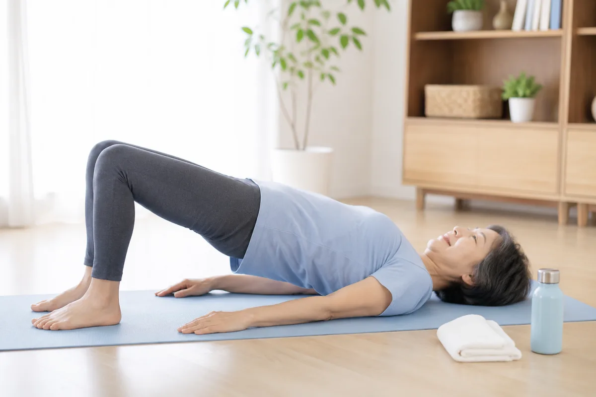

1
3段階の着圧設計
ウエストから脚の付け根にかけて編地を変えた「強・中・弱」3段階の圧力設計。支えたい股関節まわりにしっかりめの圧がかかるよう編み分けられています。
トータルHipサポーター 製造:助野株式会社／販売:村中医療器株式会社
ご注文はこちら立ち上がる時、歩き出す時の
股関節の不安に。
股関節手術後のケアのために作られた、
“履く”タイプの着圧サポーター。
毎日の散歩や体操の、動くための備えに。
医療器械の専門商社「村中医療器」の公式オンラインストアに移動します
SOLUTION
トータルHipサポーターは、富山の靴下メーカー・助野株式会社の研究開発チーム「おたすけのLAB」が開発。THA（人工股関節全置換術）など、股関節手術後のケアのために作られたサポート機能付きスパッツです。
ベルトのように巻かず、下着のように履くだけ。股関節まわりを面で包んで、毎日の「動く」を支えます。
※メーカーカタログ・資料に基づく製品特徴の記載です。
FEATURES
ウエストから脚の付け根にかけて編地を変えた「強・中・弱」3段階の圧力設計。支えたい股関節まわりにしっかりめの圧がかかるよう編み分けられています。
包帯やベルトでは難しい脚の付け根・股関節まわりへの圧迫に特化した全周設計。必要なところを面で包みます。
薄手のスパッツ型なので、ズボンやスカートの下に着てもひびきにくく、外出時にも使いやすい設計です。
繰り返し洗濯して使う前提の衣料品です。毎日使うなら洗い替え2〜3枚のご用意がおすすめです。
手術直後から使えるよう尿カテーテル用の開口部を備えるなど、病院での使われ方まで考えて設計されています（詳しくは医療機関向けページ）。
まずはサイズ表をチェック。
ご注文は公式取扱ストアで。
EVIDENCE
前方アプローチによる人工股関節全置換術（DAA-THA）を受けた患者さん63名を対象とした研究（後ろ向き非無作為化研究・術後1週間着用）で、着用群は非着用群に比べて術後5日目の太もも周径の増加がゆるやかだった（着用群104.2%・非着用群106.3%）という結果が報告されています。
※研究デザイン上、効果を断定するものではありません。研究の詳細・出典は医療機関向けページをご覧ください。
着用時の動きやすさ
「良い・普通」
歩行のしやすさ
「しやすい・普通」
※メーカー実施の試着アンケート（n=62）。感じ方には個人差があります。
SCENE
着けっぱなしではなく、散歩・体操・外出など活動する時間を中心に着用する使い方がメーカーにより推奨されています。

※画像はイメージです
FOR FACILITY
SIZE & ORDER
| サイズ | M | L | LL | 3L | 4L |
|---|---|---|---|---|---|
| ウエスト | 68〜78cm | 78〜88cm | 88〜100cm | 100〜112cm | 112〜124cm |
価格・送料・返品条件は村中医療器オンラインストアの商品ページでご確認ください。
FAQ
男女兼用 M〜4L／サイズに迷ったら1サイズ大きめを